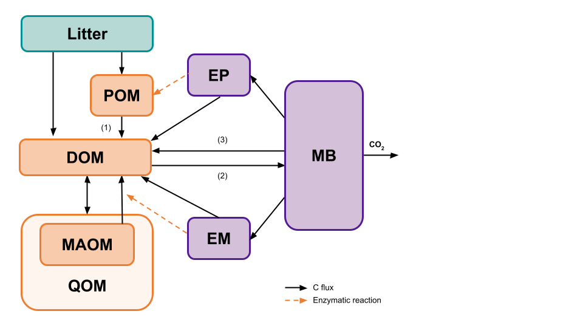
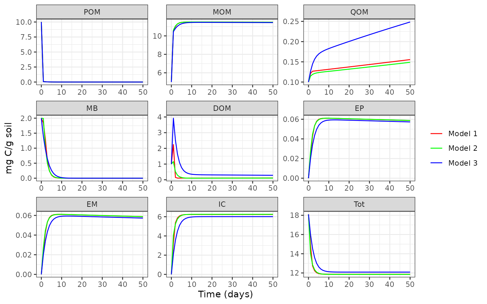

Configure a MEMC Model
ToyModel.RmdThe memc_configure function allows users to build their
own SOM model. All of the MEMC models use the same SOM pool structure
but users will be able to decide which of the following dynamics.

The memc_configure function allows users to build their
own SOM model. All of the MEMC models use the same SOM pool structure
but users will be able to decide which of the formulations (LM, MM, RMM,
ECA, or DD) are used for POM decomposition (1), DOM uptake (2), and
microbial biomass decay (3). The following example will demonstrate how
changing the DOM uptake flux impacts the model projections.
Set up the model configuration using the default paramaters and inital carbon pool values.
# Running memc_configure will print a table describing the model configuration.
mod1 <- memc_configure(params = memc_params,
state = memc_initial_state,
name = "Model 1",
DOMuptake = "MM",
POMdecomp = "LM",
MBdecay = "LM")Take a look at all the details of the new model configuraiton
print(mod1)
#> $name
#> [1] "Model 1"
#>
#> $table
#> model DOMuptake POMdecomp MBdecay
#> 1 Model 1 MM LM LM
#>
#> $params
#> parameter description
#> 1 V_p maximum specific decomposition rate for POM by EP
#> 2 K_p half-saturation constant for decomposition of POM
#> 3 V_m maximum specific decomposition rate for MOM by EM
#> 4 K_m half-saturation constant for decomposition of MOM
#> 5 V_d maximum specific uptake rate of D for growth of MB
#> 6 K_d half-saturation constant of uptake of D for growth of MB
#> 7 f_d fraction of decomposed P allocated to DOM
#> 8 g_d fraction of dead B allocated to DOM
#> 9 p_ep fraction of mR for production of EP
#> 10 p_em fraction of mR for production of EM
#> 11 r_ep turnover rate of EP
#> 12 r_em turnover rate of EM
#> 13 Q_max maximum DOC sorption capacity
#> 14 K_ads specific adsorption rate
#> 15 K_des desorption rate
#> 16 dd_beta strength of density dependent microbial decay
#> 17 Input_POM POM input
#> 18 Input_DOM DOM input
#> 19 CUE carbon use efficiency
#> units value
#> 1 mgC mgC^-1 d^-1 14.000
#> 2 mgC / g soil 50.000
#> 3 mgC mgC^-1 d^-1 0.250
#> 4 mg C/g soil 250.000
#> 5 mgC mgC^-1 d^-1 3.000
#> 6 mg C/g soil 0.250
#> 7 <NA> 0.500
#> 8 <NA> 0.500
#> 9 <NA> 0.010
#> 10 <NA> 0.010
#> 11 mgC mgC^-1 d^-1 0.001
#> 12 mgC mgC^-1 d^-1 0.001
#> 13 mgC / g soil 3.400
#> 14 mgC mgC^-1 d^-1 0.006
#> 15 mgC mgC^-1 d^-1 0.001
#> 16 <NA> 1.000
#> 17 mg C 0.000
#> 18 mg C 0.000
#> 19 0.400
#>
#> $state
#> POM MOM QOM MB DOM EP EM IC
#> 10.00000 5.00000 0.10000 2.00000 1.00000 0.00001 0.00001 0.00000
#> Tot
#> 18.10002or the summary table of the dynamics being used.
summary(mod1)| model | DOMuptake | POMdecomp | MBdecay |
|---|---|---|---|
| Model 1 | MM | LM | LM |
Use memc_solve to run our model.
mod1_out <- memc_solve(mod = mod1, time = 0:50)
head(mod1_out)
#> time variable value units name
#> <num> <fctr> <num> <char> <char>
#> 1: 0 POM 10.000000000 mg C/g soil Model 1
#> 2: 1 POM 0.078133991 mg C/g soil Model 1
#> 3: 2 POM 0.057178745 mg C/g soil Model 1
#> 4: 3 POM 0.025336371 mg C/g soil Model 1
#> 5: 4 POM 0.010945045 mg C/g soil Model 1
#> 6: 5 POM 0.004727821 mg C/g soil Model 1Now switch the DOM uptake to use the RMM dynamics.
# Running memc_configure will print a table describing the model configuration.
mod2 <- memc_configure(params = memc_params,
state = memc_initial_state,
name = "Model 2",
DOMuptake = "RMM",
POMdecomp = "LM",
MBdecay = "LM")
mod2_out <- memc_solve(mod = mod2, time = 0:50)Now try setting the DOM uptake to ECA dynamics.
# Running memc_configure will print a table describing the model configuration.
mod3 <- memc_configure(params = memc_params,
state = memc_initial_state,
name = "Model 3",
DOMuptake = "ECA",
POMdecomp = "LM",
MBdecay = "LM")
mod3_out <- memc_solve(mod = mod3, time = 0:50)Compare the model results with one another.

For more examples and tutorials please see our online documentation.